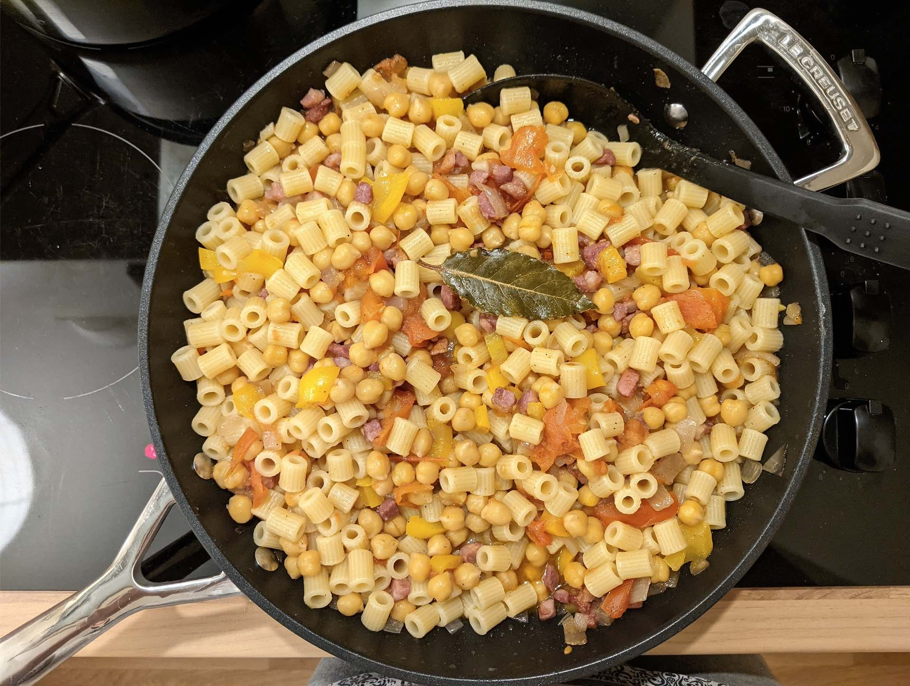

Pasta with ceci
A great recipe for using dried chickpeas.

Ingredients
350g ditaloni
200g dried chickpeas
1 onion
1 yellow pepper
300-400g tomatoes (baby ones are best, but large ones are fine too)
2 bay leaves
½ glass red wine
140g pancetta
Olive oil
Instructions
Soak the dried chickpeas for about 8 hours before boiling them in some salted water for about 60 minutes (as described in the
notes
).
Dice the onion and fry in some olive oil, along with the pancetta.
Add the red wine and allow it to reduce.
Chop up the pepper and add to the mix, along with the tomatoes (leave whole if using baby tomatoes). Season with salt and pepper at this stage.
Boil the pasta water and cook the pasta as per the required time, remembering to salt the water once the pasta is in.
Once they're cooked, add in the chickpeas and mix everything up together.
When the pasta is ready, drain it and mix it all together with the main mix. Serve with olive oil and black pepper.
Serves 5.
Inspired by my dad's cookbook.